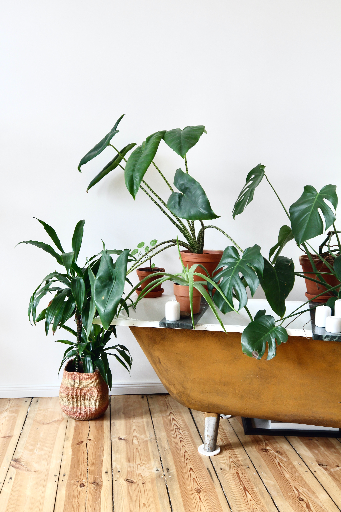
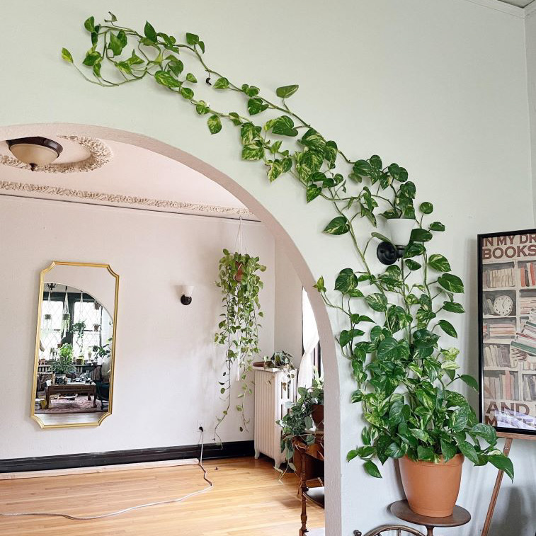
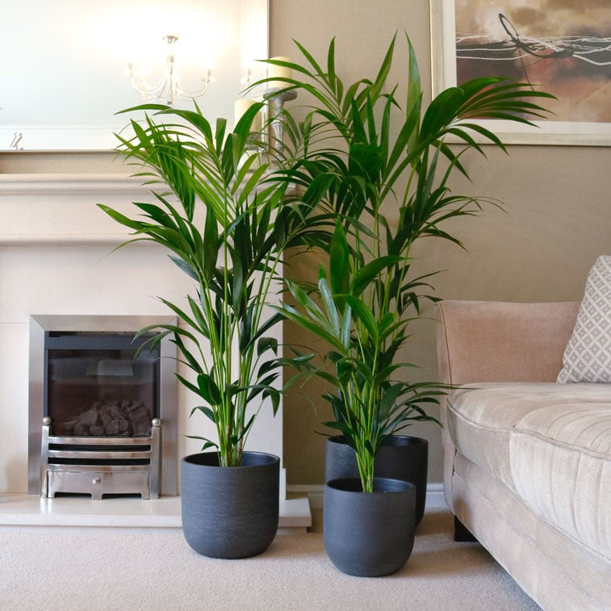

1. Match your space to their natural habitat
There are lots of different types of houseplant, and each one has evolved in a different climate. To give them a good chance of survival you need to match their natural climate, as closely as possible, to the conditions in your home or office. The most important factors are the amount of natural sunlight (think desert vs shady forest floor) and the amount of water (think desert vs rainforest).


2. Avoid the fussy plants to start with
Not all plants were born equal, by which I mean that some plants require a lot a more TLC than others so do your research beforehand. Here are the plants I categorically avoid: Bird of Paradise, Bonsai trees, Anthurium
3. When it comes to water, less is more
How often you water your plants will depend on the plant itself. Some may need watering every few days, others will need to be watered once or twice a week and some plants who prefer a dry climate can get away with being watered just once a month but what we do know is that the most common cause of indoor plants dying is overwatering. How to avoid this? Well when your plant arrives, make sure you read the care instructions carefully which will tell you all you need to know about when to water your plant.
4. Start with these 3 (almost) un-killable house plants

1. Sanseveria
The snake plant is made of tough stuff. It grows primarily across Africa, in very dry conditions. It’s used to places so hot that during the day it keeps all its pores completely closed, so it doesn’t lose any water to evaporation. When the temperature cools at night, its pores open, releasing all the oxygen its been holding in.
Its toughness makes it a dream of a houseplant. If you’re a beginner, this is the one for you. It thrives on neglect. It can live in any light conditions and doesn’t care if you forget to water it. The only thing it hates is too much water. If you want to help it grow faster, give it a feed with liquid fertiliser once per month in spring and summer.
Low-key as it is, the snake plant is treasured all over the world. Across Africa, it’s associated with Ogun, the deity of war, and Oya, the bringer of storms. In China, it’s the ‘tiger’s tail orchid’; in Brazil, the ‘sword of Saint George’. Basically, this plant is pretty famous.

2. Golden Pothos
Devil’s ivy, golden pothos, ceylon creeper, hunter’s robe, or as we call it, Rapunzel. It has so many names because it's one of the most popular houseplants in the world. There are two reasons for that. 1) It's extremely versatile. It's a fantastic hanging plant, looks great on a shelf or mantelpiece, or can even be trained up a wall. 2) It's incredibly easy to care for. We recommend our 16cm clay pots as the best fit.
In the wild, devil's ivy is usually found in forests in south-east Asia. It grows up the trunks of large trees, happily living in quite deep shade. That's how it gets its name, devil's ivy, because it's a friend of the darkness.
As an indoor plant, its needs are simple. It manages in almost any light conditions, needs infrequent watering and generally just gets on with things. It will appreciate a feed with liquid fertiliser once per month in spring and summer.

3. Kentia Palm
The Kentia palm originated on Lord Howe Island (population: 382), a tiny piece of land off the east coast of Australia. The island gives the palm its botanical name, Howea forsteriana. It’s a slow grower that can take decades to reach its maximum height of 10 metres.
In the 1870s, the Kentia palm came to the UK. The Victorians loved an exotic status symbol and grew it as a houseplant. It coped bravely with the poor light and air in Victorian homes. Queen Victoria herself was a big fan, insisting palms were placed around her coffin when she died.
This is still an incredibly popular houseplant, but now we can give it a much better life. It has simple needs. It likes lots of bright light, but not harsh direct sun. Regular misting will keep its leaves fresh and green. It will also appreciate a feed with liquid fertiliser once per month in spring and summer. It’s a royal favourite. It deserves respect.